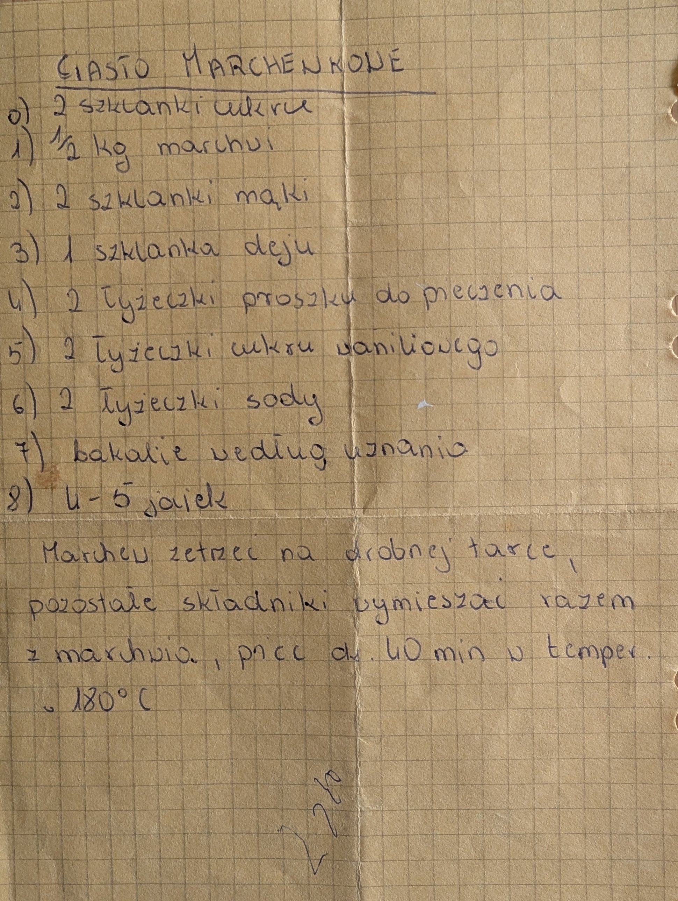

Ciasto marchewkowe

Składniki
- 2 szklanki cukru
- ½ kg marchwi
- 2 szklanki mąki
- 1 szklanka oleju
- 2 łyżeczki proszku do pieczenia
- 2 łyżeczki cukru waniliowego
- 2 łyżeczki sody
- bakalie według uznania
- 4-5 jajek
Przygotowanie
- Marchew zetrzeć na drobnej tarce.
- Pozostałe składniki wymieszać razem z marchwią.
- Piec ok. 40 min w temperaturze 180°C.
Oryginalny zapis
CIASTO MARCHEWKOWE 0) 2 szklanki cukru 1) ½ kg marchwi 2) 2 szklanki mąki 3) 1 szklanka oleju 4) 2 łyżeczki proszku do pieczenia 5) 2 łyżeczki cukru waniliowego 6) 2 łyżeczki sody 7) bakalie według uznania 8) 4-5 jajek Marchew zetrzeć na drobnej tarce, pozostałe składniki wymieszać razem z marchwią, piec ok. 40 min w temper. 180°C